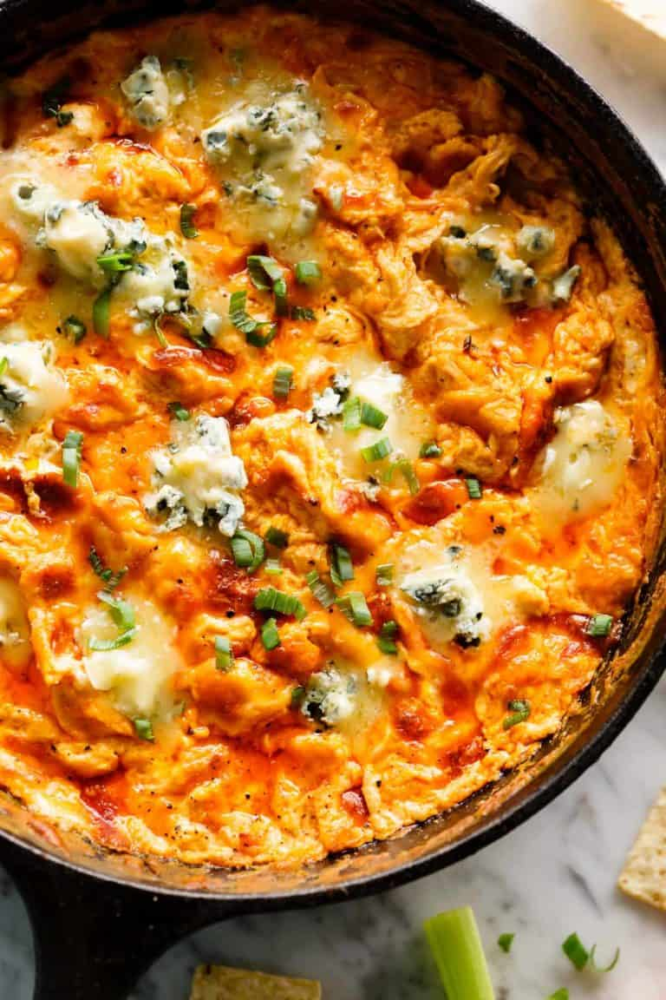

Cashew Chicken Lettuce Wraps
buffalo chicken dip is a sinfully creamy and mouthwatering appetizer infused with hot wing flavours! perfect comfort food for any special occasion.

As Easy As Apple Pie / Via aseasyasapplepie.com
Ingredients
- Frank’s Original Red Hot Sauce
- Sour cream. You can also use Ranch dressing
- Block of cream cheese: use Philly (not spreadable)
- Blue cheese is OPTIONAL for serving. If you’re not a fan, you can leave it out.
- Cheddar cheese: I love a white cheddar and American cheddar combination. You can use sharp cheddar, Colby-Jack cheese or a Tex-Mex blend.
- Sliced green onions (can sub with chives).
Steps
- SOFTEN CREAM CHEESE close to room temperature. Take it out of the refrigerator for a good 20-30 before cooking. It will continue to soften once added to the hot skillet.
- USE PRECOOKED (ROTISSERIE) CHICKEN. Shred and pull apart with two forks or cut into cubes.
- CAST-IRON SKILLET. This recipe prepares and bakes your dip in a cast-iron skillet or oven-proof pan. If you don’t have either of those, prepare all ingredients as per recipe instructions in a regular pan on the stove, then transfer buffalo dip mixture into a 1-quart (1-litre) baking dish and continue from there.
- ADJUST SPICE LEVEL. Our Buffalo dip recipe is not too spicy and kids love it. However, you can HALVE the hot sauce amount for a milder dip OR ADD MORE for a hotter dip. You choose!
what’s good with buffalo dip?
Such a versatile dip it can pretty much be served with anything! Our favourite snacks include Celery sticks, carrot sticks, red bell pepper sticks (capsicum sticks), sliced cucumber, crusty bread pieces, tortilla chips or potato chips.